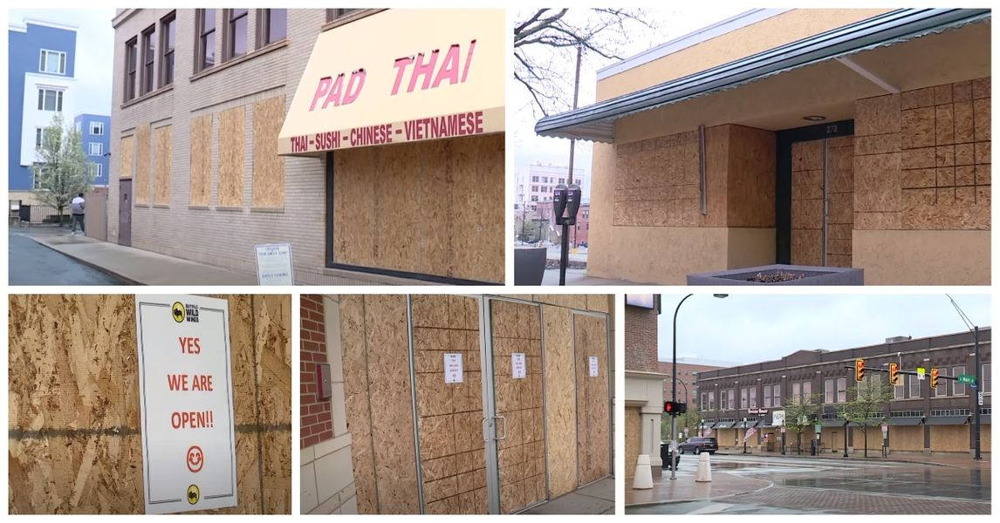

Timeline photos
This is what downtown Akron looks like right now.
The "news" says this is to protect businesses against "unruly protestors." The establishment always protects itself by villainizing the people.
The people are not to blame for this. THE SYSTEM IS TO BLAME FOR THIS.
All we had to do is name and fire those 8 police officers that shot unarmed Jayland Walker over 40 times with over 90 bullets. And we wouldn't be here today.
But no. Instead, we removed name badges from all the police officers and extremely protected the 8 police officers who murdered Jayland Walker. Shooting 90 bullets at an unarmed person is nothing if not murder. No one else could ever get away with that level of excess force except the police.
This is up to you Akron. If you want this to be our future then vote for these people:
Marco Sommerville
Jeff Fusco
Ginger Baylor
James Hardy
They are establishment insiders who believe the system is always right. They will protect it at any cost. And ironically, they will be the ones responsible for destroying the system.
If you actually want to save the system vote for these people:
Tara Mosely - Mayor
Eric Garrett - Council at Large
Fran Wilson - Council at Large
Damarios S. Walker - Ward 3
Russ Neal - Ward 4
Sage Lewis - Ward 8
Susan Culver - Ward 9